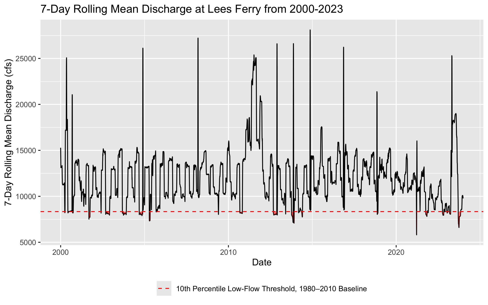
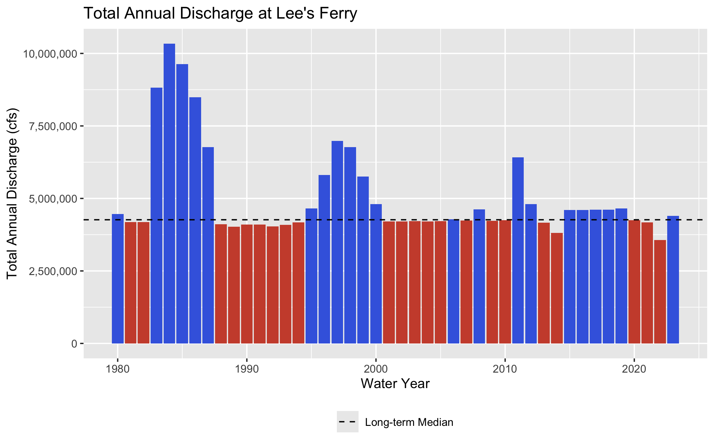
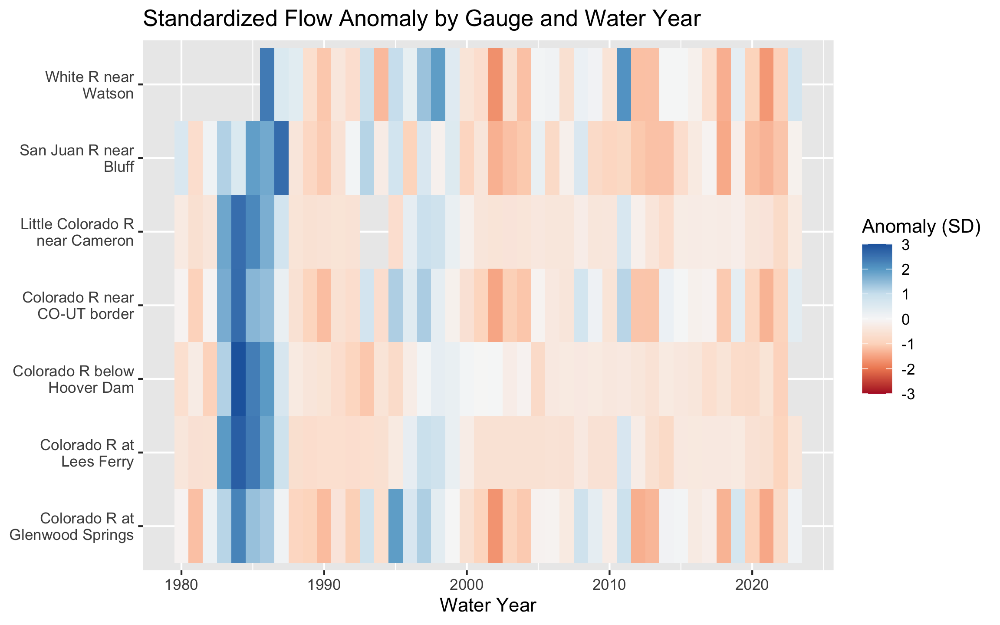
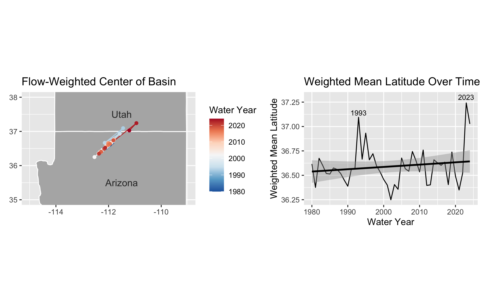
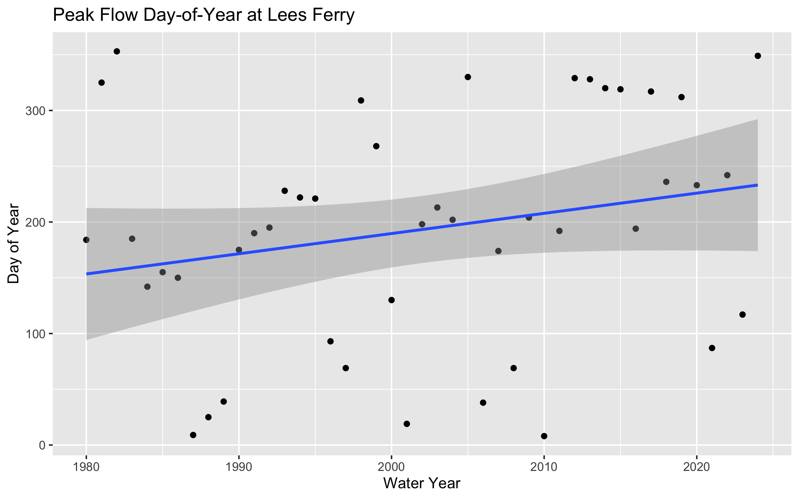
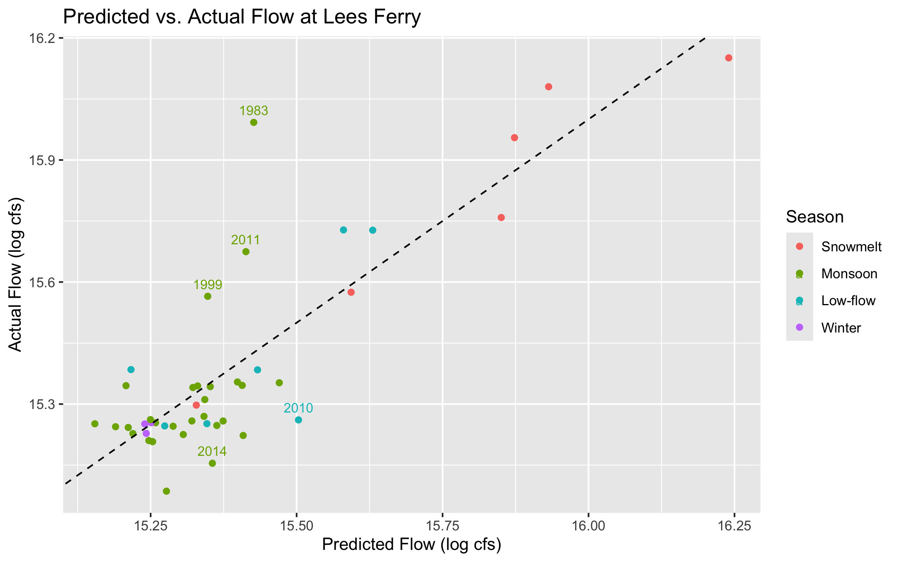
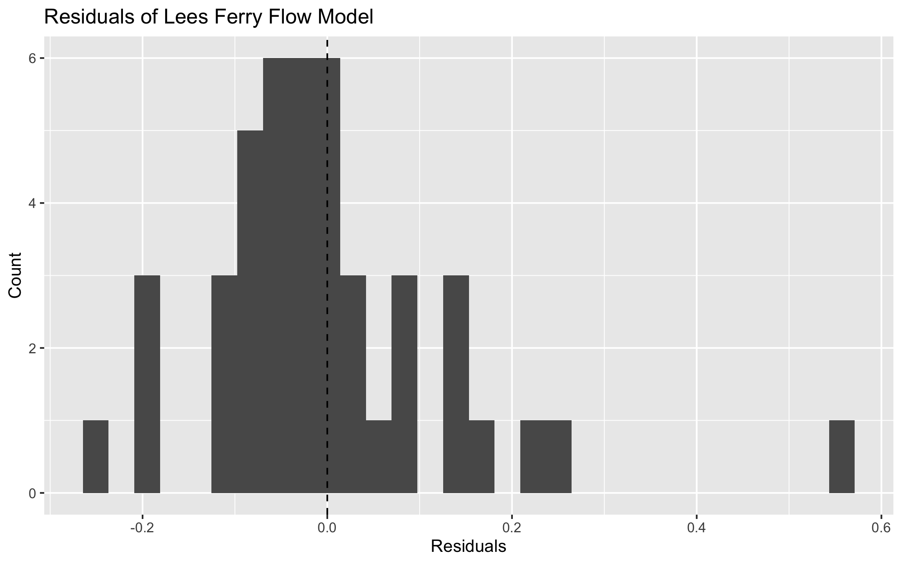

Lab 1: Data Science Tools
Exploring Streamflow Across the Colorado River Basin
In January 2023, the federal government announced the first-ever Tier 3 shortage on the Colorado River — triggering mandatory cuts to Arizona, Nevada, and Mexico. Those cuts were calculated from streamflow records like the ones you are about to pull.
The Colorado River Basin supplies drinking water to 40 million people across 7 US states, irrigates 5 million acres of farmland, and is governed by one of the oldest and most contested water rights agreements in American history — the Colorado River Compact of 1922. Understanding how streamflow varies across this system is not an academic exercise. It is the daily work of water managers, federal agencies, tribal water rights holders, and scientists navigating a river under compounding stress from drought, overallocation, and climate change.
In this lab you will work with real streamflow records pulled directly from the USGS National Water Information System (NWIS) — the same federal system water managers query every morning. You will build a complete analytical pipeline: from raw API call to normalized comparisons, threshold detection, basin-wide trend visualization, and a predictive model of the Compact’s key accounting point.
Code
if (!requireNamespace("pacman", quietly = TRUE)) install.packages("pacman")
pacman::p_load(
tidyverse,
dataRetrieval,
zoo,
patchwork,
flextable,
lubridate,
broom
)Data
We will use the dataRetrieval package — developed and maintained by the USGS — to pull 44 years of daily mean discharge from 7 long-record gauges spanning the Colorado River’s main stem and major tributaries.
The USGS parameter code for discharge is 00060 (cubic feet per second). The statistic code 00003 is the daily mean value. Under the hood, dataRetrieval constructs and queries the same REST API URL we explored in lecture:
https://waterservices.usgs.gov/nwis/dv/?sites=09380000¶meterCd=00060&statCd=00003The data can be grabbed below!
Code
gauges <- tribble(
~site_no, ~name, ~state,
"09380000", "Colorado R at Lees Ferry", "AZ",
"09163500", "Colorado R near CO-UT border", "CO",
"09085000", "Colorado R at Glenwood Springs","CO",
"09306500", "White R near Watson", "UT",
"09379500", "San Juan R near Bluff", "UT",
"09402500", "Little Colorado R near Cameron","AZ",
"09423000", "Colorado R below Hoover Dam", "NV"
)
raw <- readNWISdv(
siteNumbers = gauges$site_no,
parameterCd = "00060",
startDate = "1980-01-01",
endDate = "2023-12-31"
) |>
renameNWISColumns() |> # renames X_00060_00003 → Flow
left_join(gauges, by = "site_no") |>
select(site_no, name, state, Date, Flow)
glimpse(raw)
raw_check <- raw |>
count(site_no) |>
mutate(expected = as.numeric(as.Date("2023-12-31") - as.Date("1980-01-01")) + 1)
raw_checkThe following sites have less data than expected:
09306500 - White R near Watson
09402500 - Little Colorado R near Cameron
09423000 - Colorado R Below Hoover Dam
Code
white_r_gaps <- raw |>
filter(site_no == "09306500") |>
arrange(Date) |>
mutate(gap = as.numeric(Date - lag(Date))) |>
filter(gap > 1)
white_r_gaps
white_r_start <- raw |>
filter(site_no == "09306500") |>
summarise(min_date = min(Date), max_date = max(Date))
little_co_gaps <- raw |>
filter(site_no == "09402500") |>
arrange(Date) |>
mutate(gap = as.numeric(Date - lag(Date))) |>
filter(gap > 1)
little_co_gaps
below_hoover_gaps <- raw |>
filter(site_no == "09423000") |>
arrange(Date) |>
mutate(gap = as.numeric(Date - lag(Date))) |>
filter(gap > 1)
below_hoover_gapsWhite R near Watson gauge didn’t start recording until 1985-10-01
Little Colorado R near Cameron gauge has a gap of 731 days ending on 1994-12-31
Colorado R Below Hoover Dam gauge has a gap of 239 days ending on 2023-03-26
Question 1: Daily Conditions Report
You are a water resources analyst. Each morning you deliver a reproducible snapshot of current conditions to Colorado River Compact stakeholders. The analysis must be re-runnable on any date with a single change — that requires building it around parameter objects rather than hardcoded values.
a. Create a my.date parameter object set to the last day of water year 2023 (September 30, 2023). Ensure it is stored as a proper Date object, not a character string.
Code
my.date <- as.Date("2023-09-30")
class(my.date)[1] "Date"b. Compute the day-over-day change in discharge for each gauge — how much flow rose or fell compared to the previous day. Store this as a new column called flow_delta. This tells you whether conditions are improving or deteriorating, which is often more actionable than the raw level alone.
Code
dod_discharge <- raw |>
group_by(site_no) |>
mutate(flow_delta = Flow - lag(Flow))c. Filter to my.date and produce two formatted tables using flextable:
- Table 1: The 5 gauges with the highest discharge — where is flow greatest right now?
- Table 2: The 5 gauges with the greatest day-over-day increase — where is flow rising fastest?
Code
date_tables <- dod_discharge |>
filter(Date == my.date)
table_one <- date_tables |>
ungroup() |>
slice_max(Flow, n = 5) |>
select(-flow_delta) |>
select(-Date)
table_two <- date_tables |>
ungroup() |>
slice_max(flow_delta, n = 5) |>
select(-Flow) |>
select(-Date)Code
ft_table_one <- flextable(table_one) |>
set_header_labels(
site_no = "Site #",
name = "Station Name",
state = "State",
Flow = "Flow (cfs)") |>
set_caption(paste0("Colorado River Gauges with Highest Discharge on ", format(my.date, "%m-%d-%Y"))) |>
autofit()
ft_table_oneSite # | Station Name | State | Flow (cfs) |
|---|---|---|---|
09402500 | Little Colorado R near Cameron | AZ | 6,950 |
09380000 | Colorado R at Lees Ferry | AZ | 6,570 |
09163500 | Colorado R near CO-UT border | CO | 3,470 |
09379500 | San Juan R near Bluff | UT | 680 |
09085000 | Colorado R at Glenwood Springs | CO | 533 |
Code
ft_table_two <- flextable(table_two) |>
set_header_labels(
site_no = "Site #",
name = "Station Name",
state = "State",
flow_delta = "Flow Change") |>
set_caption(paste0("Colorado River Gauges with Greatest Day-Over-Day Flow Increase on ", format(my.date, "%m-%d-%Y"))) |>
autofit()
ft_table_twoSite # | Station Name | State | Flow Change |
|---|---|---|---|
09085000 | Colorado R at Glenwood Springs | CO | 8 |
09306500 | White R near Watson | UT | -7 |
09380000 | Colorado R at Lees Ferry | AZ | -10 |
09402500 | Little Colorado R near Cameron | AZ | -20 |
09163500 | Colorado R near CO-UT border | CO | -50 |
Question 2: Basin Metadata Join
Raw discharge numbers alone don’t tell the full story. Lees Ferry always carries more water than the San Juan at Bluff — but that is largely because it drains over 111,000 square miles versus the San Juan’s ~23,000. To compare these sites meaningfully, we need each gauge’s drainage area. That information lives in a separate table and must be joined in.
This is the core relational data problem: observations in one table, attributes in another, connected through a shared key. It is also one of the most error-prone operations in data science — not because the syntax is hard, but because bad joins fail silently.
The anatomy of a join
Before writing a single _join() call, answer three questions:
- What is the key? Which column(s) connect the two tables?
The “site_no” column is the key.
- What is the relationship? One-to-one, or one-to-many?
This is a one-to-many relationship. Each site in site_meta has exactly one set of metadata per gauge, but each site appears many times in raw.
- What happens to non-matching rows? Keep them (with NAs), or drop them?
I’ll use a left join to preserve all flow records in the raw dataset, retaining rows even where no matching site metadata existed.
a. Pull site metadata for all 7 gauges. Before joining, verify that site_no is actually unique in site_meta — a duplicated key will silently inflate your row count.
Code
site_meta <- readNWISsite(gauges$site_no) |>
select(
site_no,
drain_area_va, # drainage area in square miles
huc_cd, # 8-digit HUC watershed code
dec_lat_va, # latitude
dec_long_va # longitude
)
# Is site_no actually unique? If any row shows n > 1, the join will duplicate rows
site_meta |> count(site_no) |> filter(n > 1)[1] site_no n
<0 rows> (or 0-length row.names)b. Join site_meta to your flow data using site_no as the key. Use the join type that keeps all flow records regardless of whether metadata is available.
Code
joined <- left_join(raw, site_meta, by = "site_no")c. Verify the join — this step is not optional:
Code
nrow(joined) == nrow(raw)[1] TRUECode
sum(is.na(joined$dec_lat_va)) == 0[1] TRUEQuestion 3: Per-Unit-Area Normalization
Lees Ferry’s high discharge reflects its enormous watershed, not necessarily more intense rainfall or runoff. To compare runoff intensity across sites with different drainage areas, we normalize by expressing flow per unit area: cfs per square mile.
a. Add a flow_per_sqmi column to your data.frame.
Code
flow_sqmi <- joined |>
mutate(flow_per_sqmi = round(Flow/drain_area_va, 4))b. On my.date, build a flextable showing both raw and normalized rankings side by side for all 7 gauges. Include columns for gauge name, raw discharge (cfs), drainage area (mi²), normalized flow (cfs/mi²), raw rank, and normalized rank. Sort by raw rank.
Code
date_tables_flow_sqmi <- flow_sqmi |>
filter(Date == my.date)
table_three <- date_tables_flow_sqmi |>
mutate(raw_rank = rank(desc(Flow)), norm_rank = rank(desc(flow_per_sqmi))) |>
arrange(raw_rank) |>
select(name, drain_area_va, Flow, flow_per_sqmi, raw_rank, norm_rank)
ft_table_three <- flextable(table_three) |>
colformat_num(na_str = "NA") |>
set_header_labels(
name = "Station Name",
drain_area_va = "Drainage Area (mi²)",
Flow = "Flow (cfs)",
flow_per_sqmi = "Normalized Flow (cfs/mi²)",
raw_rank = "Rank",
norm_rank = "Normalized Rank") |>
set_caption(paste0("Raw vs. Normalized Flow Rankings for Colorado River Gauges on ", format(my.date, "%m-%d-%Y"))) |>
add_footer_lines("NA indicates no recorded flow on this date") |>
autofit()
ft_table_threeStation Name | Drainage Area (mi²) | Flow (cfs) | Normalized Flow (cfs/mi²) | Rank | Normalized Rank |
|---|---|---|---|---|---|
Little Colorado R near Cameron | 141,600 | 6,950 | 0.0491 | 1 | 5 |
Colorado R at Lees Ferry | 111,800 | 6,570 | 0.0588 | 2 | 4 |
Colorado R near CO-UT border | 17,849 | 3,470 | 0.1944 | 3 | 2 |
San Juan R near Bluff | 23,000 | 680 | 0.0296 | 4 | 6 |
Colorado R at Glenwood Springs | 1,453 | 533 | 0.3668 | 5 | 1 |
White R near Watson | 4,020 | 329 | 0.0818 | 6 | 3 |
Colorado R below Hoover Dam | 173,300 | NA | NA | 7 | 7 |
NA indicates no recorded flow on this date | |||||
c. Answer in 2–3 sentences: (1) do the raw and normalized rankings differ, and if so, which gauge changes most dramatically? (2) Why does per-area normalization matter for comparing gauges in the Colorado Basin? (3) Name one analysis where you would use raw discharge and one where you would use normalized discharge.
Raw and normalized discharge rankings differ significantly. Colorado R at Glenwood Springs and Little Colorado R near Cameron show the most dramatic change. Colorado R at Glenwood jumps from 5th in raw discharge to 1st in normalized flow, while Little Colorado R near Cameron drops from 1st to 5th once its large drainage area is accounted for. Per-area normalization matters in the Colorado Basin because the gauges span a wide range of watershed sizes, so raw discharge largely reflects drainage area rather than actual runoff intensity or precipitation. Normalization of discharge allows for more meaningful comparison across sites. Raw discharge is important for infrastructure design such as bridges or dams, while normalized discharge is more valuable when comparing runoff responses to storm events.
Question 4: Low-Flow Threshold Monitoring
Drought managers don’t just watch absolute flow levels — they watch how current conditions compare to historical norms. The standard operational metric is the 7Q10: the lowest 7-day average flow expected to occur once in 10 years. We’ll use a related approach: flag when the 7-day rolling mean falls below the historical 10th percentile.
a. For each gauge, compute the 7-day rolling mean of daily discharge. Use zoo::rollmean() with fill = NA and align = "right" so each value represents the average of the current and 6 preceding days. If you haven’t seen this function before, check out the documentation (?rollmean) and examples to understand how it works.
Code
rolling_mean <- raw |>
group_by(site_no) |>
mutate(rolling_mean = rollmean(Flow, 7, fill = NA, align = "right")) |>
ungroup()b. Define a low-flow threshold for each gauge as the 10th percentile of its historical discharge during 1980–2010. A flow that is critically low for Lees Ferry might be above average for the Little Colorado — thresholds must be site-specific.
Code
lf_thresh <- raw |>
filter(Date >= "1980-01-01" & Date <= "2010-12-31") |>
group_by(site_no) |>
summarise(threshold_10th = quantile(Flow, 0.10, na.rm = TRUE)) |>
ungroup()c. Add a logical column below_threshold that is TRUE when the 7-day rolling mean is below the gauge’s 10th percentile threshold.
Code
rolling_mean <- rolling_mean |>
left_join(lf_thresh, by = "site_no") |>
mutate(below_threshold = rolling_mean < threshold_10th)d. For Lees Ferry (site 09380000) — the Compact’s primary accounting point — plot the 7-day rolling mean from 2000–2023 using ggplot. Shade periods below threshold in red and add a dashed horizontal reference line at the threshold.
Code
rolling_mean |>
filter(site_no == "09380000", Date >= "2000-01-01") |>
ggplot(aes(x = Date, y = rolling_mean)) +
geom_line() +
geom_ribbon(aes(ymin = ifelse(below_threshold, threshold_10th, NA), ymax = ifelse(below_threshold, rolling_mean, NA)), fill = "red", alpha = 0.5) +
geom_hline(aes(yintercept = threshold_10th, color = "10th Percentile Low-Flow Threshold, 1980–2010 Baseline"),
linetype = "dashed") +
scale_color_manual(values = c("10th Percentile Low-Flow Threshold, 1980–2010 Baseline" = "red")) +
theme(legend.position = "bottom") +
labs(title = "7-Day Rolling Mean Discharge at Lees Ferry from 2000-2023",
y = "7-Day Rolling Mean Discharge (cfs)",
color = NULL)
e. How many days per year, on average, did Lees Ferry fall below its low-flow threshold in 2000–2010 vs. 2011–2023? Produce a small summary table and answer in 2–3 sentences: (1) did below-threshold days increase or decrease? (2) Is this a shift in isolated dry years or a persistent baseline change? (3) What does this imply for Compact delivery obligations?
Code
lf_thresh_2000_2010 <- rolling_mean |>
filter(site_no == "09380000", Date >= "2000-01-01" & Date <= "2010-12-31") |>
summarise(avg_days_below = round(sum(below_threshold, na.rm = TRUE) / n_distinct(year(Date)))) |>
mutate(period = "2000-2010")
lf_thresh_2011_2023 <- rolling_mean |>
filter(site_no == "09380000", Date >= "2011-01-01" & Date <= "2023-12-31") |>
summarise(avg_days_below = round(sum(below_threshold, na.rm = TRUE) / n_distinct(year(Date)))) |>
mutate(period = "2011-2023")
summary_table <- bind_rows(lf_thresh_2000_2010, lf_thresh_2011_2023)
summary_tableCode
ft_summary_table <- flextable(summary_table) |>
set_header_labels( period = "Period", avg_days_below = "Average Days") |>
autofit() |>
align(align = "center", part = "all")
ft_summary_tableAverage Days | Period |
|---|---|
36 | 2000-2010 |
28 | 2011-2023 |
Below threshold days decreased from an average of 36 days per year in 2000-2010 to an average of 28 days per year in 2011-2023. The 7-day rolling mean plot suggests this is due to isolated drought years rather than a persistent baseline shift. For Compact delivery obligations, this suggests that flows have improved relative to the historical threshold. However, the 10th percentile threshold was derived from data from 1980-2010, so this conclusion should be interpreted cautiously. The 1980-2010 baseline may reflect higher flows than current conditions, potentially underestimating true water scarcity.
Question 5: Annual Water Year Summary
Calendar years are a poor fit for western US hydrology. The water year (October 1 – September 30) captures the full snowmelt cycle: snowpack accumulates through winter, melts in spring, and by September the basin has recharged or drawn down for the year. Water year 2023 = October 1, 2022 through September 30, 2023.
a. Add water_year and month columns to your dataset. The water year is the calendar year of the ending September 30 — months October through December belong to the next water year.
Code
water_year <- rolling_mean |>
mutate(month = month(Date), water_year = if_else(month >= 10, year(Date) +1, year(Date)))b. For each gauge and water year, compute: total annual discharge, peak daily discharge, and number of days below the low-flow threshold.
Code
annual_summary <- water_year |>
group_by(site_no, water_year) |>
summarise(total_annual_discharge = sum(Flow, na.rm = TRUE), peak_daily_discharge = max(Flow, na.rm = TRUE),
days_below_threshold = sum(below_threshold, na.rm = TRUE)) |>
ungroup()c. Plot total annual discharge at Lees Ferry by water year (1980–2023) as a bar chart. Color bars above the long-term median blue and bars below it red. Add a dashed horizontal reference line at the median.
Code
lees_ferry_annual <- annual_summary |>
filter(site_no == "09380000") |>
filter(water_year < 2024) |>
mutate(median_tad = median(total_annual_discharge))
lees_ferry_annual |>
ggplot(aes(x = water_year, y = total_annual_discharge, fill = total_annual_discharge >= median_tad)) +
geom_col() +
geom_hline(aes(yintercept = median_tad, color = "Long-term Median"), linetype = "dashed") +
scale_fill_manual(values = c("TRUE" = "royalblue", "FALSE" = "tomato3"), guide = "none") +
scale_color_manual(values = c("Long-term Median" = "black")) +
labs(color = NULL) +
theme(legend.position = "bottom") +
scale_y_continuous(labels = scales::comma) +
labs(title = "Total Annual Discharge at Lee's Ferry",
x = "Water Year",
y = "Total Annual Discharge (cfs)")
In 2–3 sentences: (1) describe the direction and approximate timing of any structural shift in the record, (2) identify one year that stands out as an exception to the dominant pattern and what you know about its cause, and (3) explain what this pattern means for Compact water accounting.
Total annual discharge at Lees Ferry shows a clear shift beginning in 2000. Prior to 2000 there were many wet years where discharge was well above the long-term median, while flows after 2000 consistently hovered near or below it. One exception is 2011, which had above average snowpack (Colorado Division of Water Resources, 2011). The Colorado River Compact allocated water based on historical flow records, which included much wetter periods that reliably recharged the basin (Bureau of Reclamation, 2012). The shift shown at Lees Ferry suggests the Colorado River is no longer delivering the volume of water it once was and that the river is over-allocated.
Question 6: Basin-Wide Trend Analysis
A single gauge tells you about one location. To understand whether drought is consistent across the entire basin — or whether some tributaries are diverging from the main stem — you need to compare all gauges simultaneously on the same scale.
Raw discharge can’t serve this purpose: a large-watershed gauge will always dominate. The solution is a standardized anomaly — each year’s flow expressed as standard deviations above or below the site’s own baseline mean:
\[\text{anomaly} = \frac{\bar{Q}_{year} - \bar{Q}_{baseline}}{\sigma_{baseline}}\]
where baseline = 1980–2010. An anomaly of –2 means “two standard deviations below normal for this gauge” — directly comparable to the same metric at any other gauge.
a. Compute the 1980–2010 baseline mean and SD per gauge. Join those stats back to the full annual data and compute the standardized anomaly for every gauge-year combination.
Code
baseline <- annual_summary |>
filter(water_year >= 1980 & water_year <= 2010) |>
group_by(site_no) |>
summarise(baseline_mean = mean(total_annual_discharge, na.rm = TRUE), baseline_sd = sd(total_annual_discharge, na.rm = TRUE)) |>
ungroup()
baseline_joined <- left_join(annual_summary, baseline, by = "site_no") |>
mutate(anomaly = (total_annual_discharge - baseline_mean) / baseline_sd)
baseline_joined <- baseline_joined |>
left_join(select(joined, site_no, name) |> distinct(), by = "site_no")
nrow(baseline_joined) == nrow(annual_summary)[1] TRUECode
sum(is.na(baseline_joined$baseline_mean)) == 0[1] TRUEb. Visualize as a heatmap: water year on x, gauge name on y, fill = standardized anomaly. Use a diverging color scale centered at zero (blue = above average, red = below average).
Code
heatmap <- baseline_joined |>
filter(water_year < 2024) |>
filter(!(site_no == "09423000" & water_year >= 2023)) |>
filter(!(site_no == "09402500" & water_year %in% c(1993, 1994)))
#^filtering out incomplete water years/data gaps
ggplot(heatmap, aes(x = water_year, y = name, fill = anomaly)) +
geom_tile() +
scale_fill_distiller(palette = "RdBu", direction = 1,
limits = c(-3, 3), oob = scales::squish) +
scale_y_discrete(labels = scales::label_wrap(18)) +
labs(title = "Standardized Flow Anomaly by Gauge and Water Year",
x = "Water Year", y = NULL, fill = "Anomaly (SD)")
c. In 3–4 sentences: (1) describe whether the post-2000 drought signal appears across all gauges or only some, (2) identify two specific years that appear as basin-wide anomalies — one dry, one wet — and name the climate event that caused each, and (3) explain what simultaneous basin-wide anomalies tell you that a single-gauge record cannot.
The post-2000 drought signal appears consistently across all gauges, with most sites showing below-average anomalies from the early 2000s onward. This suggests that the drought is a basin-wide phenomenon. Water year 1984 stands out as a basin-wide wet anomaly, driven by record snowpack following several wet winters across the Rocky Mountains (Kunkel & Stevens, 2022). Water year 2002 appears as a basin-wide dry anomaly, corresponding to one of the most severe single-year droughts in Colorado Basin history (Kunkel & Stevens, 2022). The simultaneous nature of these anomalies across all seven gauges confirms that the signal is climatically driven. A single gauge record could suggest this conclusion but not prove it, since an anomaly at one site could reflect local land use, reservoir operations, or measurement error rather than a true basin-wide climate signal.
Question 7: The Moving Center of Drought
You have been asked to understand how the geographic center of streamflow has shifted over time. If drought has disproportionately reduced flow in the southern tributaries, the flow-weighted center of the basin should drift north — proportionally more flow is coming from northern headwater gauges. In exceptional snowmelt years it should shift back.
We measure this with the flow-weighted mean position: each gauge’s coordinates are weighted by its fraction of total annual basin flow.
\[\bar{X}_{year} = \frac{\sum (lon_i \times Q_i)}{\sum Q_i} \qquad \bar{Y}_{year} = \frac{\sum (lat_i \times Q_i)}{\sum Q_i}\]
a. Join gauge coordinates (dec_lat_va, dec_long_va) from site_meta to your annual summary. Compute the flow-weighted mean latitude and longitude for each water year.
Code
weighted_coords <- left_join(annual_summary, site_meta, by = "site_no")
nrow(annual_summary) == nrow(weighted_coords)[1] TRUECode
sum(is.na(weighted_coords$dec_lat_va)) == 0[1] TRUECode
flow_weighted <- weighted_coords |>
group_by(water_year) |>
summarise(weighted_lat = sum(dec_lat_va * total_annual_discharge, na.rm = TRUE) / sum(total_annual_discharge, na.rm = TRUE),
weighted_lon = sum(dec_long_va * total_annual_discharge, na.rm = TRUE) / sum(total_annual_discharge, na.rm = TRUE))b. Create a two-panel figure using patchwork:
- Left: western US base map with the weighted center plotted as points colored by water year (blue = early, red = recent) and connected by a path through time
- Right: line plot of weighted mean latitude over time with a linear trend line
Code
ut_az_states <- map_data("state") |>
filter(region %in% c("arizona", "utah"))
left_map_panel <- ggplot() +
geom_polygon(data = ut_az_states, aes(x = long, y = lat, group = group),
fill = "gray70", color = "white") +
geom_path(data = flow_weighted, aes(x = weighted_lon, y = weighted_lat, color = water_year)) +
geom_point(data = flow_weighted, aes(x = weighted_lon, y = weighted_lat, color = water_year)) +
scale_color_distiller(palette = "RdBu") +
coord_fixed(1.3, xlim = c(-115, -109), ylim = c(35, 38)) +
labs(title = "Flow-Weighted Center of Basin", x = NULL, y = NULL, color = "Water Year") +
annotate("text", x = -111.5, y = 37.5, label = "Utah", color = "gray20", size = 4) +
annotate("text", x = -111.5, y = 35.5, label = "Arizona", color = "gray20", size = 4)
right_map_panel <- ggplot(flow_weighted, aes(x = water_year, y = weighted_lat)) +
geom_line() +
geom_smooth(method = "lm", color = "black") +
labs(title = "Weighted Mean Latitude Over Time", x = "Water Year", y = "Weighted Mean Latitude") +
annotate("text", x = 1993, y = 37.14, label = "1993", size = 3) +
annotate("text", x = 2023, y = 37.3, label = "2023", size = 3)
left_map_panel + right_map_panel
c. Your latitude time series should show two years where the weighted center spikes dramatically northward. Identify those two years and explain: (1) what climate event caused each spike, (2) what they have in common physically, and (3) what the long-term upward trend in weighted latitude suggests about which part of the basin is becoming proportionally more important to total flow — and why that matters for water managers downstream.
The two years where the flow-weighted center spikes dramatically northward are 1993 and 2023, corresponding to exceptionally wet years across the upper Colorado Basin driven by above-average snowpack in the Colorado River headwaters (U.S. Geological Survey, 2024; Tillman et al., 2025). This disproportionately increased flow from upper basin gauges relative to southern tributaries, pulling the weighted center northward. The long-term upward trend in weighted latitude suggests that northern headwater gauges are becoming proportionally more important to total basin flow over time. This matters for water managers because Compact allocations assume a relatively stable geographic distribution of flow sources. If the basin’s hydrologic center of mass is shifting north, downstream users who depend on southern tributary contributions may face increasing reliability risk.
Question 8: Seasonal Regimes and Peak Timing
Annual totals mask important seasonal structure. The Colorado Basin has two distinct runoff pulses: a snowmelt surge in spring (April–June) driven by Rocky Mountain headwater snowpack, and a monsoon pulse in late summer (July–September) driven by convective storms across the Arizona-New Mexico plateau. These seasons respond differently to climate forcing — and under warming, the snowmelt season is arriving earlier.
a. Add a season column using case_when(). Roughly we will define the seasons as follows:
- Snowmelt: April–June (months 4–6)
- Monsoon: July–September (months 7–9)
- Low-flow: October–December (months 10–12)
- Winter: January–March (months 1–3)
Make season a factor with levels in hydrological order: Snowmelt, Monsoon, Low-flow, Winter.
Code
seasonal_regime <- water_year |>
mutate(month = month(Date),
season = case_when(month %in% 4:6 ~ "Snowmelt", month %in% 7:9 ~ "Monsoon", month %in% 10:12 ~ "Low-flow", month %in% 1:3 ~ "Winter"),
season = factor(season, levels = c('Snowmelt', 'Monsoon', 'Low-flow', 'Winter')))
seasonal_regime <- left_join(seasonal_regime, site_meta, by = "site_no")
nrow(seasonal_regime) == nrow(water_year)[1] TRUECode
sum(is.na(seasonal_regime$drain_area_va)) == 0[1] TRUEb. Group by gauge, water year, and season. Summarize total seasonal discharge and normalized runoff per group.
Code
seasonal_summary <- seasonal_regime |>
group_by(site_no, water_year, season) |>
summarize(total_seasonal_discharge = sum(Flow, na.rm = TRUE), normalized_runoff = total_seasonal_discharge / first(drain_area_va)) |>
ungroup()c. For each gauge and water year, identify the date of peak 7-day mean flow and convert it to day-of-year. Plot peak day-of-year vs. water year for Lees Ferry with a linear trend line.
Code
peak_timing <- seasonal_regime |>
group_by(site_no, water_year) |>
slice_max(rolling_mean, n = 1, with_ties = FALSE) |>
mutate(day_of_year = yday(Date)) |>
ungroup()
peak_timing_lees <- peak_timing |>
filter(site_no == "09380000")
ggplot(peak_timing_lees, aes(x = water_year, y = day_of_year)) +
geom_point() +
geom_smooth(method = "lm") +
labs(title = "Peak Flow Day-of-Year at Lees Ferry", x = "Water Year", y = "Day of Year")
d. In 2–3 sentences: (1) describe the direction and magnitude of the peak timing trend, (2) is it statistically visible or buried in noise? (3) What would a two-week earlier peak timing mean operationally for reservoir managers trying to capture spring runoff before it passes downstream?
Peak flow timing at Lees Ferry shows a weak upward trend over the study period, suggesting peaks are occurring slightly later in the calendar year, though the scatter in the data indicate this trend is largely buried in noise. The lack of a clear earlier-peak signal is likely attributable to Glen Canyon Dam’s regulation of flow immediately upstream. Dam release schedules can obscure the natural snowmelt timing signal that would otherwise be visible at an unregulated gauge. Peak timing two weeks earlier would have significant operational consequences for reservoir managers. Storage capacity would need to be freed up earlier in the spring to capture runoff, requiring earlier drawdowns that would conflict with maintaining winter storage levels.
Question 9: Predicting Lees Ferry from Upstream Conditions
Lees Ferry is the Compact’s accounting point — the location where upper basin states must deliver flow to lower basin states. Predicting annual discharge at Lees Ferry from upstream conditions has direct operational value: managers can begin planning deliveries months before the water arrives.
We’ll build a simple but physically grounded model: can Glenwood Springs (an upper Rocky Mountain gauge) predict Lees Ferry annual flow, and, does that relationship change by season?
Data Preparation
a. Build your model dataset through four sequential operations:
- Filter
annualto Lees Ferry; renametotal_flowtolees_flow - Join annual Glenwood Springs flow (site
09085000); rename toglenwood_flow - Join the dominant season at Lees Ferry per water year, the season with the highest total discharge
- Log-transform both flow variables
Code
lees_model <- annual_summary |>
filter(site_no == "09380000" & water_year <= 2023) |>
rename(lees_flow = total_annual_discharge)
glenwood_springs <- annual_summary |>
filter(site_no == "09085000" & water_year <= 2023) |>
rename(glenwood_flow = total_annual_discharge)
lees_glenwood <- left_join(lees_model, glenwood_springs, by = "water_year")
nrow(lees_glenwood) == nrow(lees_model)[1] TRUECode
sum(is.na(lees_glenwood$glenwood_flow)) == 0[1] TRUECode
dominant_season <- seasonal_summary |>
filter(site_no == "09380000") |>
group_by(water_year) |>
slice_max(total_seasonal_discharge, n = 1, with_ties = FALSE) |>
ungroup()
lees_glenwood_dominant_season <- left_join(lees_glenwood, dominant_season, by = "water_year")
nrow(lees_glenwood_dominant_season) == nrow(lees_glenwood)[1] TRUECode
sum(is.na(lees_glenwood_dominant_season$season)) == 0[1] TRUECode
lees_glenwood_dominant_season <- lees_glenwood_dominant_season |>
mutate(log_lees_flow = log(lees_flow), log_glenwood_flow = log(glenwood_flow))Model Building
b. Fit a linear model predicting log_lees from log_glenwood, season, and their interaction, If you haven’t seen linear modeling in R, we will cover it in more detail later in this course, but, the syntax is straightforward: lm(response ~ predictor1 * predictor2, data = mydata) fits a model with main effects and an interaction term. The interaction (*) allows the relationship between Glenwood and Lees to differ by season while a model without interaction (lm(log_lees ~ log_glenwood + season)) would assume the same Glenwood-Lees relationship in every season.
Code
mod <- lm(log_lees_flow ~ log_glenwood_flow * season, data = lees_glenwood_dominant_season)
summary(mod)c. In 3–4 sentences: (1) report the R² and state whether the overall model is statistically significant, (2) interpret the log_glenwood coefficient as an elasticity — what does it mean physically that the coefficient is greater than 1? (3) describe what the significant negative interaction terms tell you about the upstream-downstream relationship outside of Snowmelt season.
The adjusted R² is 0.6572, which means the model explains 65.7% of the variance in Lees Ferry annual flow. The model is statistically significant with a p-value of 4.114e-08. The log_glenwood_flow coefficient of 1.80 is an elasticity, a 1% increase in Glenwood Springs flow is associated with a 1.80% increase at Lees Ferry. This means above-average headwater years are amplified as flow accumulates from tributaries downstream. Outside of Snowmelt season, the upstream-downstream amplification is much weaker across all seasons. The negative interaction terms for Monsoon, Low-flow, and Winter all substantially reduce the baseline elasticity, meaning Glenwood Springs flow is a much weaker predictor of Lees Ferry delivery outside of spring snowmelt.
Question 10: Model Evaluation
A model that fits well on average can still fail in predictable ways. Two core assumptions of linear regression are: predictions should be unbiased across the full range of fitted values, and residuals should be approximately normally distributed. Let’s check both — and look for the outlier year that the model cannot predict.
a. Use broom::augment() to produce a tidy data frame of predictions and residuals alongside the original data:
Code
aug <- augment(mod, data = lees_glenwood_dominant_season)b. Create a predicted vs. actual scatter plot. Add a dashed 1:1 reference line (perfect prediction). Color points by season. Identify any point that sits noticeably off the line.
Code
pred_v_actual_plot <- aug |>
ggplot(aes(x = .fitted, y = log_lees_flow, color = season)) +
geom_point() +
geom_abline(slope = 1, intercept = 0, linetype = "dashed") +
labs(title = "Predicted vs. Actual Flow at Lees Ferry", y = "Actual Flow (log cfs)", x = "Predicted Flow (log cfs)", color = "Season") +
geom_text(data = filter(aug, abs(.resid) > 0.2), aes(label = water_year), size = 3, nudge_y = 0.03)
pred_v_actual_plot
c. Plot a histogram of the residuals with a vertical dashed line at zero.
Code
residual_histogram <- aug |>
ggplot(aes(x = .resid)) +
geom_histogram() +
geom_vline(xintercept = 0, linetype = "dashed") +
labs(title = "Residuals of Lees Ferry Flow Model", y = "Count", x = "Residuals")
residual_histogram
d. In 3–4 sentences: (1) identify the outlier water year visible in your scatter plot. Which year is it and why did the model fail to predict it? (2) Do the residuals appear approximately normal, or is there a tail that concerns you? (3) Name two additional predictors that would most improve this model and explain the physical mechanism behind each.
The most notable outlier is 1983, which the model substantially underpredicted. This was an exceptionally wet year, producing flows far outside the range the model was trained on. The residuals are approximately normally distributed and centered near zero, though the long right tail driven by 1983 suggests the model struggles with extreme wet years. An additional predictor that would improve the model is spring snowpack levels at upstream SNOTEL stations, which directly drive spring runoff volume and would help the model anticipate extremely wet years. A soil moisture variable would also improve the model, as it would capture how much upstream precipitation is absorbed by dry soils before reaching the channel.
References
Bureau of Reclamation. (2012, December). Colorado River Basin water supply and demand study: Study report. https://usbr.gov/lc/region/programs/crbstudy/finalreport/Study%20Report/StudyReport_FINAL_Dec2012.pdf
Colorado Division of Water Resources, Office of the State Engineer. (2011, April). Colorado water supply conditions update. https://spl.cde.state.co.us/artemis/nrserials/nr513internet/nr513201104internet.pdf
Kunkel, K. E., & Stevens, L. E. (2022). Colorado: State climate summary 2022. NOAA National Centers for Environmental Information. https://statesummaries.ncics.org/chapter/co/
Tillman, F. D., Masbruch, M. D., Knight, J. E., Engott, J. A., Lopez, S. F., Jones, C. J., Dickinson, J. E., & Miller, M. P. (2025). Hydrologic response of groundwater and streamflow to natural and anthropogenic drivers of change in headwaters of the upper Colorado River basin during recent wet (1982–1999) and drought (2000–2022) conditions. Journal of Hydrology: Regional Studies, 60, 102554. https://doi.org/10.1016/j.ejrh.2025.102554
U.S. Geological Survey. (2024). Colorado River Basin drought and the 2023 water year. https://www.usgs.gov/tools/colorado-river-basin-drought-and-2023-water-year